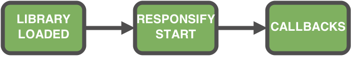
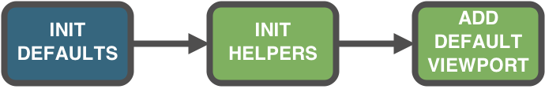
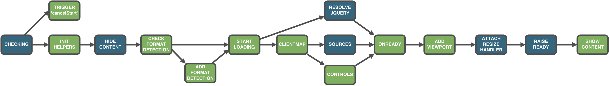
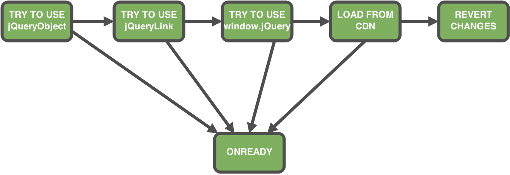
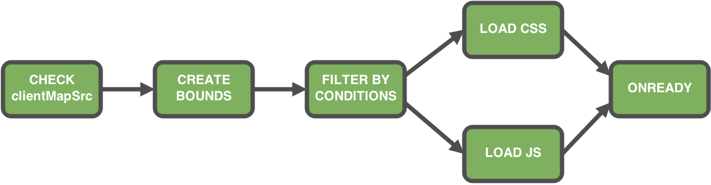

ResponsiveJS is our highspeed, easy-to-implement JavaScript framework that transforms your desktop website into a Responsive Design website, optimized across screen sizes for mobile and tablet.
Insert the library 5thfinger.responsive.js
Insert an inline script, that begins responsifying
Insert the following markup inside the <head> section
To minimize the impact on your site,
place the tag as close as possible the </head> tag.
<script src="//your-hostname//5thfinger.responsive.js"
type="text/javascript"></script>
<script type="text/javascript">
responsify.start({
remoteDebug: false,
mobileOnly: true,
clientMapSrc: "//your-hostname/clientMap.js"
});
</script>
<html>
<head>
<script src="//your-hostname//5thfinger.responsive.js"
type="text/javascript"></script>
<script type="text/javascript">
responsify.start({
remoteDebug: false,
mobileOnly: true,
clientMapSrc: "//your-hostname/clientMap.js"
});
</script>
</head>
<body>Here is your page</body>
</html>Configuration object to setup project settings before executing client scripts
responsify.clientMap = {
viewport: "",
bounds: {
phone: { maxWidth: 669 },
tablet: { minWidth: 670, maxWidth: 1280 },
desktop: { minWidth: 1281 }
},
controls: ["footerLinks"],
sources: {
timeout: 10000,
js: [{ src: "./js/master.js", callback: "runMaster"}],
css: [{ href:"./css/master.css" }]
}
};
Allows you to set your value for the viewport meta tag.
Default value:
width=device-width, minimum-scale=1.0, maximum-scale=1.0, initial-scale=1.0, user-scalable=no
Declares ranges in pixels for the screen width
bounds: {
phone: { maxWidth: 669 },
tablet: { minWidth: 670, maxWidth: 1280 },
desktop: { minWidth: 1281 }
}
Ability to separate the behavior for different bounds
The library creates some media queries to manage visibility of elements
//element1 is visible only for phones
RD.boundManager.applyFor($(".element1-selector"), [bounds.phone]);
//element2 is visible for all bounds except phone
RD.boundManager.applyForOther($(".element2-selector"), [bounds.phone]);
List of controls the library loads
controls: [
"footerLinks",
"fullSiteLink",
"menuBlock"
]
The heart of the clientmap
Defines where the code must be applied
sources:{
timeout:10000,
js:[
{ src:"master.js", callback:"runMaster" },
{ src:"productList.js", contentCondition:[".products"],
callback:"runProductList" },
{ src:"product.js", urlCondition:["product"],
contentCondition:[".product"], callback:"runProduct" },
{ src:"iphone-ipad-only.js", uaCondition:["iphone", "ipad"],
callback:"runIphoneIpadOnly" }
],
css:[
{ href:"../css/master.css" },
{ href:"../css/productList.css", contentCondition:[".products"] },
{ href:"../css/product.css", urlCondition:["product"],
contentCondition:[".product"] }
]
}
number of milliseconds for downloading the sources
the timeout is exceeded, the library reverts changes
All types of conditions are arrays, except customCondition
Condition is true, if any sub-condition in the array is true
Source is applied, if all conditions are true
The following source is applied, when:
var isRetina = function(){
return window.devicePixelRatio === 2;
};
//...
sources:{
js:[
{ src:"test.js", uaCondition:["iphone", "ipad"],
urlCondition:["product"], customCondition: isRetina,
contentCondition:[".someElement"], callback:"runTest" }
]
}
The library executes JS callbacks after the CSS file is loaded
clientMap.js
sources:{
css:[
{ href: "master.css", id: "master-css" }
]
}
master.css
link#master-css {
visibility: hidden;
}
can be divided into 3 phases


var defaults = {
waitForJQueryTimeout: 30000,
viewport: "width=device-width, minimum-scale=1.0, maximum-scale=1.0,"
+ " initial-scale=1.0, user-scalable=no",
log: true,
jQueryLink: "//ajax.googleapis.com/ajax/libs/jquery/1.9.1/jquery.min.js",
jQueryMinSupportedVersion: "1.8",
formatDetection: false
};
the following flow happens when responsify.start({...}) method is called

responsify.start({
clientMapSrc: "//your-hostname/clientMap.js"
remoteDebug: false,
mobileOnly: true,
jQueryObject: "jQuery",
formatDetection: false,
log: true
});
Required
Location of the clientmap file
Optional. Default: false
Based on jsconsole
Useful for simple debugging, logging on a mobile device
Optional. Default: false
Applies the responsive code only for touch devices
Optional. Default: "jQuery"
Declares what object is used as jQuery
More details about jQuery
Optional. Default: "//ajax.googleapis.com/ajax/libs/jquery/1.9.1/jquery.min.js"
Location of jQuery, that would be used
More details about jQuery
Optional. Default: false
Adds meta tag format-detection
<meta name="format-detection" content="telephone=no"/>
Optional. Default: true
Writes logs into the browser console
addEventListenermobileOnly enabled?fullSite enabled?The library adds the code below to the <head>
<style id="RDhideAll" type="text/css">
html, body {
background:none;
}
body>* {
opacity:0;
filter:alpha(opacity=0);
position:absolute;
left:-3000px;
}
<style>


The Library removes
and shows content
when any from the list below fails
JS and CSS code are concatenated and minified in a single file
It's usually called clientMap.js
Sources are not loaded separately
clientMap object
sources: {
js: [{ src: "js/master.js", callback: "runMaster"}]
}
Code in the same file, callback matches the first argument
RD.clientFnManager.set("runMaster", function () {
//do something
});
clientMap object
sources: {
css: [{ href: "css/master.css"}]
}
Code in the same file, href matches the first argument
RD.clientCssManager.set('css/master.css', 'body{ background: red; }');
The second argument is added to style tag
memories the current screen width
triggers resize event
triggers boundChange event
triggers ready event
adds CSS sources to the page, in the production version
executes JS callbacks
a callback is executed one time
setTimeout's, setInterval's, event handlers live until the next page loading
The library is fully documented using JSDoc
describes public APIs
has examples